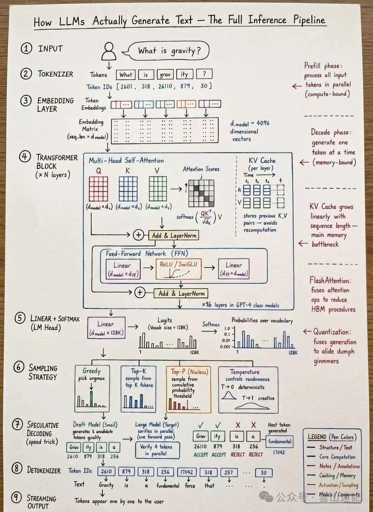

推理流程图解
第 2 讲配套阅读。从文本输入到流式返回，跟踪一个推理请求。


- 输入与调度。聊天模板和 Tokenizer 把消息编码成 Token ID。准入队列和调度器按 Token 与 KV 容量选请求、组批次。
- Prefill。Transformer 处理提示词并建立每层 KV Cache。提示词长度、批大小和算子共同影响首 Token 延迟（TTFT）。
- Decode。模型读取历史 KV，LM Head 输出 Logits，经采样产生新 Token，再更新 KV。连续批处理让多条序列共享执行轮次。
- 返回与测量。增量反分词并流式输出，结束后释放资源。记录 TPOT、P99 时延和满足服务目标的 Goodput。
阅读提示
- 图中的 Token ID、隐藏维度、词表和层数是示例。以实际模型和 Tokenizer 配置为准。
- KV 分页分配可减少碎片，前缀缓存可复用重复上下文。GQA、MQA 和缓存精度会影响每 Token 的 KV 占用。
- FlashAttention 减少 HBM 读写。推测解码由草稿机制提议候选，再由目标模型按所选算法验证。